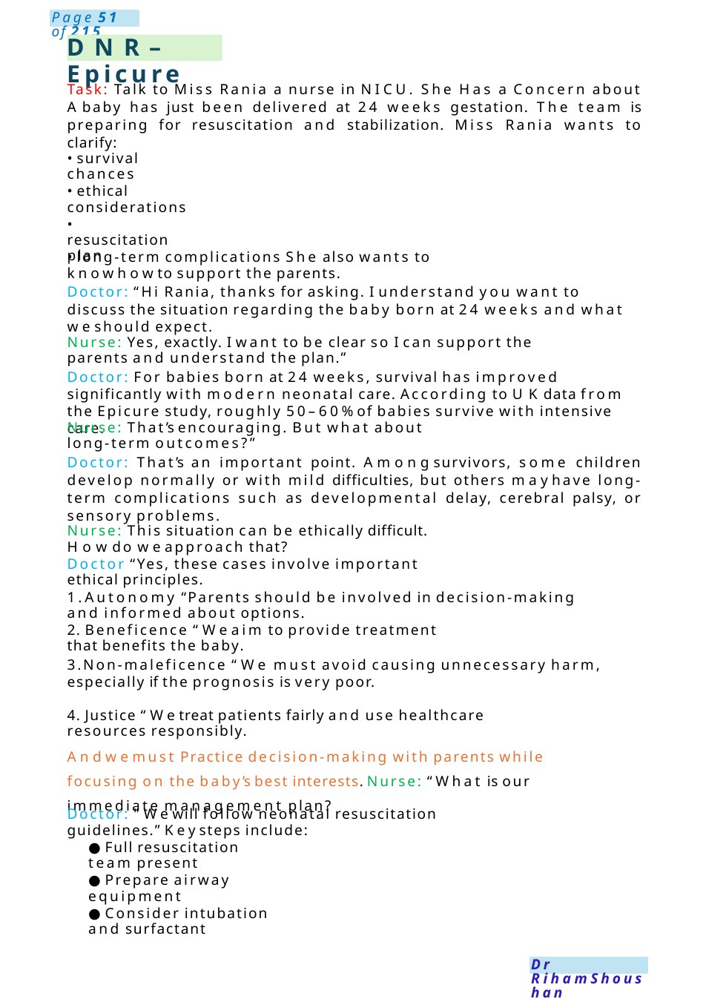
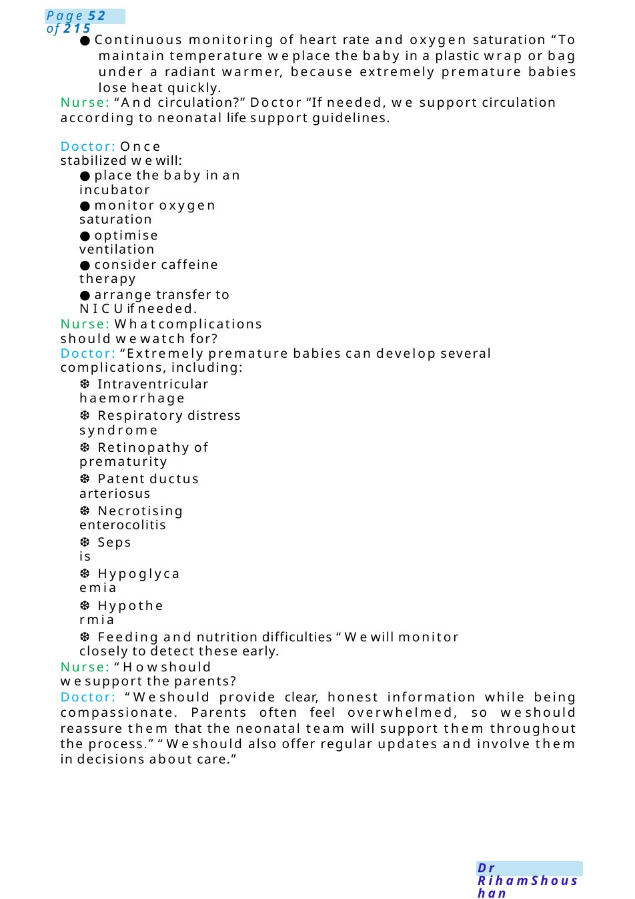

DNR– Epicure
Task: Talk to Miss Rania a nurse in NICU. She Has a Concern about Ababy has just been delivered at 24 weeks gestation. The team is preparing for resuscitation and stabilization. Miss Rania wants to clarify: • long-term complications She also wants to knowhowto support the parents.
Scenario Summary
Task: Talk to Miss Rania a nurse in NICU. She Has a Concern about Ababy has just been delivered at 24 weeks gestation. The team is preparing for resuscitation and stabilization. Miss Rania wants to clarify: • long-term complications She also wants to knowhowto support the parents.
Full Original Scenario

DNR– Epicure
Task: Talk to Miss Rania a nurse in NICU. She Has a Concern about Ababy has just been delivered at 24 weeks gestation. The team is preparing for resuscitation and stabilization. Miss Rania wants to clarify:
- survival chances
- ethical considerations
- resuscitation plan
- long-term complications She also wants to knowhowto support the parents.
Doctor: “Hi Rania, thanks for asking. I understand you want to discuss the situation regarding the baby born at 24 weeks and what weshould expect.
Nurse: Yes, exactly. I want to be clear so I can support the parents and understand the plan.”
Doctor: For babies born at 24 weeks, survival has improved significantly with modern neonatal care. According to UKdata from the Epicure study, roughly 50–60%of babies survive with intensive care.
Nurse: That’s encouraging. But what about long-term outcomes?”
Doctor: That’s an important point. Amongsurvivors, some children develop normally or with mild difficulties, but others mayhave long-term complications such as developmental delay, cerebral palsy, or sensory problems.
Nurse: This situation can be ethically difficult. Howdo weapproach that?
Doctor “Yes, these cases involve important ethical principles.
1.Autonomy “Parents should be involved in decision-making and informed about options.
2. Beneficence “Weaim to provide treatment that benefits the baby.
3.Non-maleficence “We must avoid causing unnecessary harm, especially if the prognosis is very poor.
4. Justice “Wetreat patients fairly and use healthcare resources responsibly.
Andwemust Practice decision-making with parents while focusing on the baby’s best interests. Nurse: “What is our immediate management plan?
Doctor: "Wewill follow neonatal resuscitation guidelines.” Keysteps include:
●Full resuscitation team present
●Prepare airway equipment
●Consider intubation and surfactant

●Continuous monitoring of heart rate and oxygen saturation “To maintain temperature weplace the baby in a plastic wrap or bag under a radiant warmer, because extremely premature babies lose heat quickly.
Nurse: “And circulation?” Doctor “If needed, we support circulation according to neonatal life support guidelines.
Doctor: Once stabilized wewill:
●place the baby in an incubator
●monitor oxygen saturation
●optimise ventilation
●consider caffeine therapy
●arrange transfer to NICUif needed.
Nurse: Whatcomplications should wewatch for?
Doctor: “Extremely premature babies can develop several complications, including:
❆Intraventricular haemorrhage
❆Respiratory distress syndrome
❆Retinopathy of prematurity
❆Patent ductus arteriosus
❆Necrotising enterocolitis
❆Sepsis
❆Hypoglycaemia
❆Hypothermia
❆Feeding and nutrition difficulties “Wewill monitor closely to detect these early.
Nurse: “Howshould wesupport the parents?
Doctor: “Weshould provide clear, honest information while being compassionate. Parents often feel overwhelmed, so weshould reassure them that the neonatal team will support them throughout the process.” “Weshould also offer regular updates and involve them in decisions about care.”

Safe Transfer of Neonate
−Scenario: Arrange transfer of 28 wneonate aged 3 h, he is stable, due to insufficient staff to a hospital 100 kilometres away. Due to insufficient staff. The mother had anti partum haemorrhage.
−Definition: The aim of a safe transfer policy is to ensure the highest standard, streamlined care. In most cases the transfer will be performed by a dedicated transfer team.
− Why will you transfer my baby? Because there is no available place here and the number of nurses is not enough. Your son is the most stable one in the unit.
- How will he be transferred? Are you sure he will be safe if you don't expose him to any problem? Yes, I explain to you everything about the transfer
Before transfer:
- Arrange the documents about the child including all information about the medical condition, his birth circumstances, age, weight, any recusation needed with details about o2 saturation, medications used, any lines connected, feeding of the child and its amount.
- Discharge paper with all current details.
- Team for transfer from a well-trained nurse, assistant and a neonatal specialist with the ambulance workers.
- Arrange all medications and equipment needed during the process of transfer.
- Arrange the incubator for his transfer (temperature, humidity, setting).
- Check the Equipment and medications in the ambulance car before leaving.
- Communicate with the other hospital to inform them about the case full details and be sure it will be available for him. Also arrange with them who will be responsible for delivering the child and the exact time.
- Arrange transform form &discharge summary.